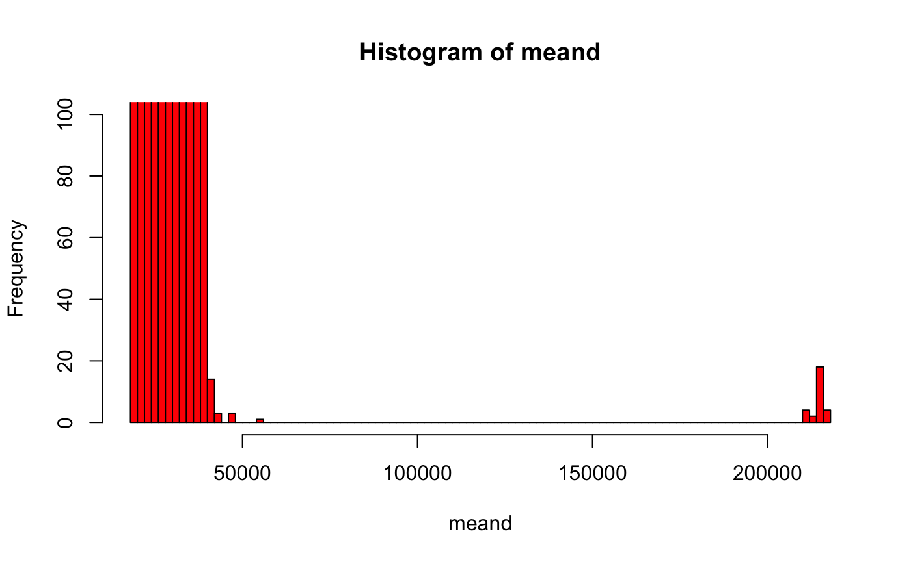
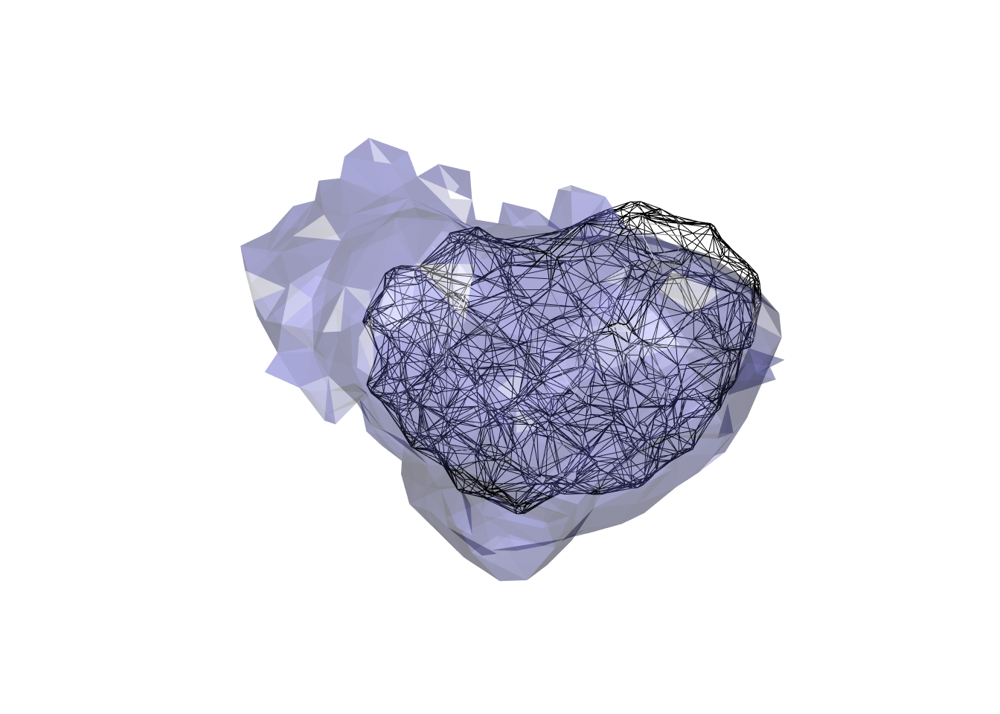
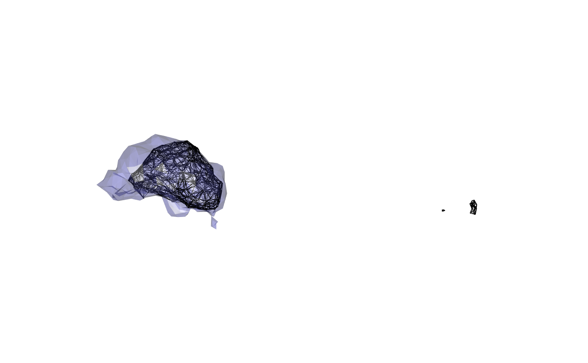

You can use 3D data pulled from CATMAID to create meshes. You can also do the same with light level data and then transform into FAFB space.
First load main packages
library(elmr)
cl=try(catmaid_login())
catmaid_available=inherits(cl, "catmaid_connection")
library(knitr)
opts_chunk$set(eval=catmaid_available)In order to run some of this example we need to ensure that we:
We will most our examples run conditionally based on this.
library(dplyr)
library(alphashape3d)
library(rgl)
# set up for 3d plots based on rgl package
rgl::setupKnitr()
# frontal view
view3d(userMatrix=rgl::rotationMatrix(angle = pi, 1,0,0), zoom=0.8)We’re going to use synapses between PNs and KCs to define a mesh
pntokc = catmaid_get_connectors_between(pre_skids = 'annotation:^PN$',
post_skids = 'annotation:^KC$')
# select 3d position of presynaptic connectors
pntokc %>%
distinct(connector_id, .keep_all=TRUE) %>%
select(connector_x:connector_z) %>%
data.matrix -> cxyzNow we can make an alphashape based on those connector positions. We need to set the alpha value in the ashape3d function to something sensible based on the spatial scale of our data - he we use alpha=6000 nm.
calyx.a=ashape3d(cxyz, alpha = 6000)
calyx=as.mesh3d(calyx.a)We can compare the resultant mesh with the location of the connectors
wire3d(calyx)
points3d(cxyz, col='red')
points3d(pntokc[,c('post_node_x','post_node_y','post_node_z')], col='blue')
We can also compare with the mesh supplied with elmr, which was transformed from JFRC2 space via JFRC2013 to FAFB13:
wire3d(calyx)
plot3d(FAFB13NP.surf, "MB_CA_R", alpha=.3)
view3d(userMatrix=rgl::rotationMatrix(angle = pi, 1,0,0), zoom=0.8)
And we can also compare the dorsal view as well:
wire3d(calyx)
plot3d(FAFB13NP.surf, "MB_CA_R", alpha=.3)
view3d(userMatrix=rgl::rotationMatrix(angle = -pi/2, 1,0,0), zoom=0.8)
It’s clear that there is a mismatch here. This may originate in part from the fact that the JFRC2013 intermediate template has rather flattened MB calyces. The quality of the JFRC2-JFRC2013 bridging registration is likely also a factor.
Finally if one wanted to place this mesh into catmaid, one could do it as follows:
catmaid_add_volume(calyx, title="fafb13.MB_CA_R", comment="Constructed by GSXEJ from PN-KC synapses directly in FAFB13 space.")